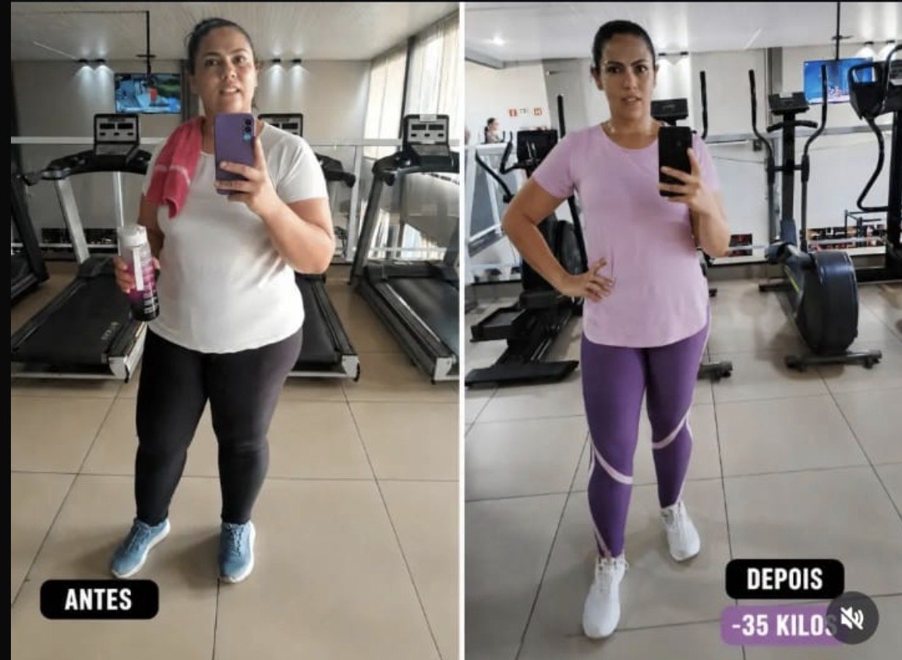
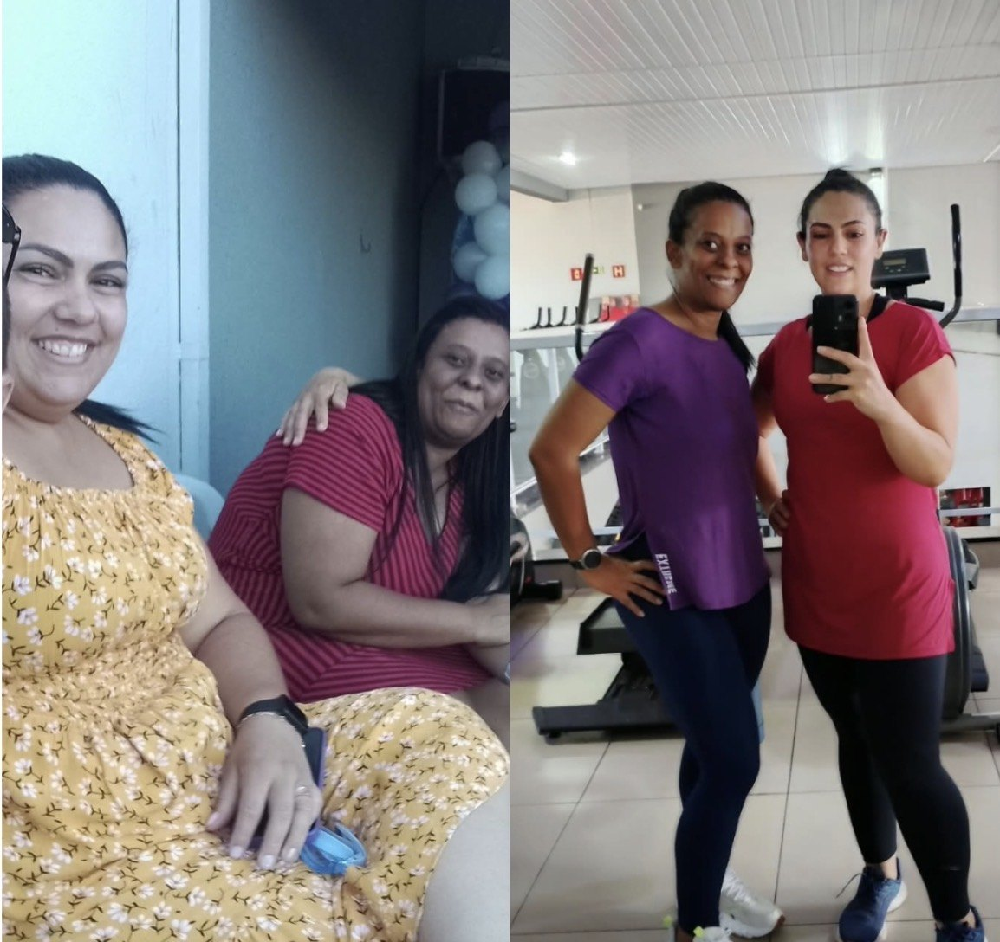
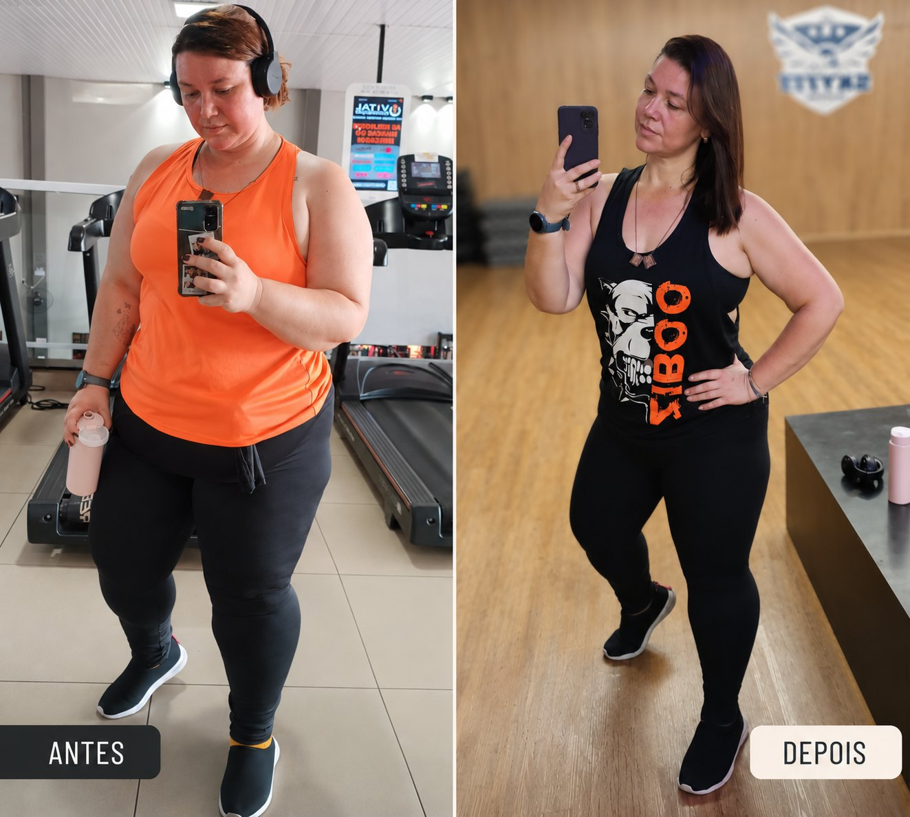

35 kg a menos ao longo do processo.
Sou personal trainer e nutricionista. Meu trabalho é ajudar você a organizar seu treino e sua alimentação de um jeito que faça sentido para sua rotina, com direção e acompanhamento de acordo com o plano escolhido.
Acredito que resultados consistentes começam com um caminho claro e possível de seguir.

Cada aluno tem seu ponto de partida, suas dificuldades e seu ritmo. Estes são alguns resultados de pessoas que acompanhei.

35 kg a menos ao longo do processo.

Evolução de uma aluna.

Resultado de acompanhamento.

Evolução de um aluno.
Os resultados são individuais e variam conforme contexto, adesão, tempo e características de cada pessoa.
Responda três perguntas rápidas para conhecer as opções de atendimento e escolher o plano que faz sentido para você.
Descubra como posso te ajudar